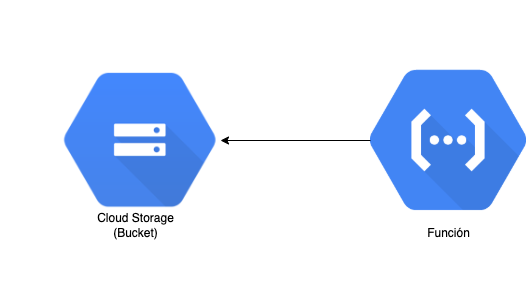
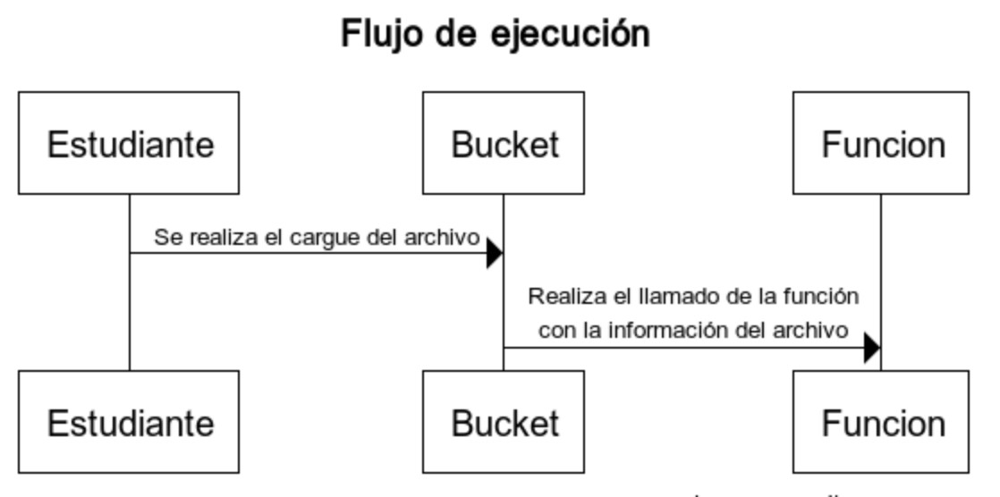
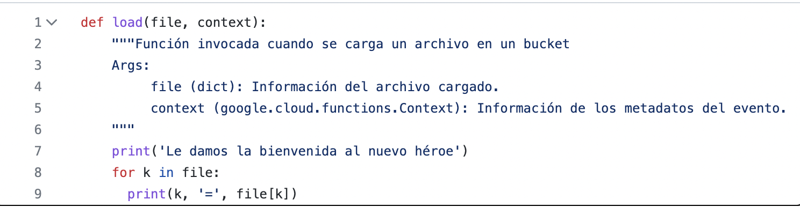
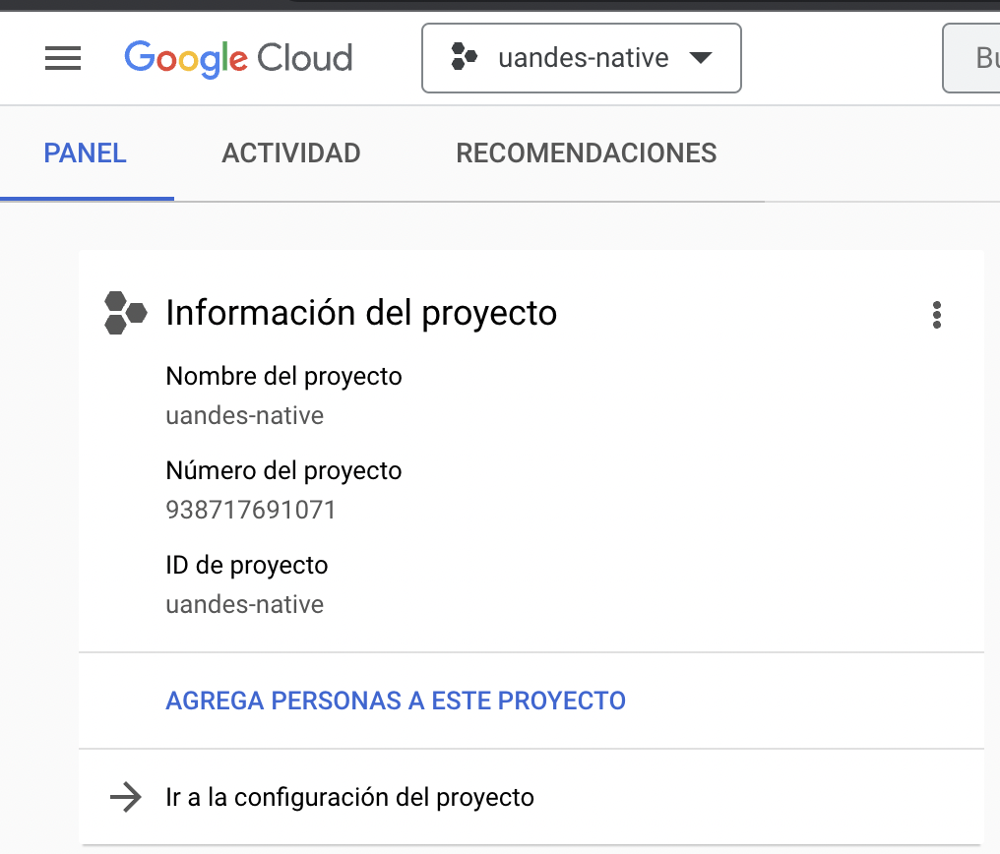
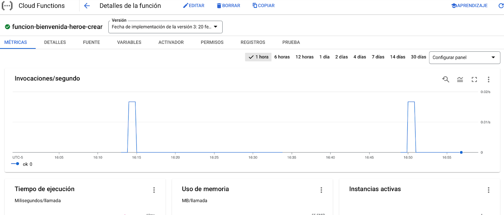
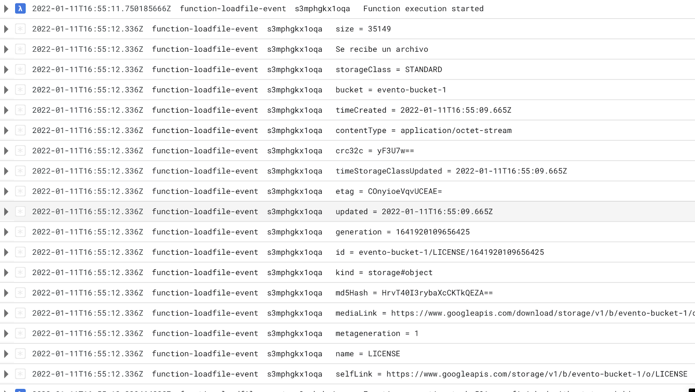

Al finalizar el tutorial el estudiante estará en capacidad de:
En particular se utilizarán los siguientes recursos:
El código de la aplicación lo encuentra en el siguiente repositorio de GitHub gcp-das-storage
En el repositorio va a encontrar la siguiente función. En la carpeta "procesar-creacion-heroe" y cuenta con la siguiente definición del servicio.
/ | |
Descripción | Retorna la entrada recibida por parámetro y deja un registro en la operación |
Método | POST |
Retorno | application/json, con la información recibirá en el body. |
Body de la petición | application/json, no necesita una entrada concreta o específica. |
En este ejercicio se realizará la publicación de una sola función que se activará cuando se cree un nuevo archivo en el servicio de Cloud Storage. El comportamiento que se espera simular es la ejecución de la función cuando ocurra un evento de creación. En este tipo de esquemas se tiene la ventaja de que el o los agentes que se encargan de disparar el evento (en nuestro caso la creación del archivo) son agnósticos a la función en sí, por lo que solo definiremos la interacción de estos dos elementos en el sistema. A continuación se ilustran los componentes que interactúan y la dinámica de la ejecución para este taller:
Componentes involucrados

Diagrama de secuencia de la ejecución

Si verifica el código del archivo main.py en la carpeta del proyecto, encontrará que el código solo cuenta con una función que no hace uso de librerías de terceros. Lo que implica que nuestra función es independiente de la plataforma de ejecución, y será la plataforma la encargada de su llamado y no la función la encargada de escuchar los cambios en la plataforma.

Debe verificar que el proyecto objetivo se encuentra seleccionado tanto el de la consola de google cloud como en la consola local de su computador.
En google cloud asegúrese de tener seleccionado el proyecto al entrar a console.cloud.google.com

En el la terminal ejecute el siguiente comando para verificar que el ID de proyecto corresponde con el se la consola de google cloud:
user@192 ~ % gcloud config get-value project
Este tutorial seguiremos trabajando con el bucket de almacenamiento que se creó en el taller "Funciones y storage" de gcp. En este se debió crear un servicio de almacenamiento con un nombre elegido por el estudiante. En caso de no haber completado este taller, le recomendamos por favor realizarlo.
Dentro del repositorio, abra la terminal y diríjase a la carpeta de la función procesar-creacion-heroe.
user@192 ~ % cd procesar-creacion-heroe
Una vez allí, vamos a realizar la publicación de la función. Para ello debemos ejecutar el siguiente comando, ajustando el nombre del bucket sobre el que se ejecutará el evento:
user@192 ~ % gcloud functions deploy funcion-bienvenida-heroe-crear --entry-point load --runtime python39 --trigger-resource <nombre_bucket> --trigger-event google.storage.object.finalize --memory 128M --region us-central1 --timeout 60 --min-instances 0 --max-instances 1
La mayoría de los parámetros de configuración se mostraron en el tutorial "Despliegue de funciones como servicio". Sin embargo, ahora tenemos dos parámetro diferentes a los ilustrados en aquel tutorial. A diferencia del anterior, en donde el trigger era una solicitud http, en este caso note que se utiliza como trigger un evento asociado a un recurso. A continuación se explican los nuevos parámetros.
Parámetro | Utilidad |
| Nos permite definir el recurso sobre el que se realiza la observación para ejecutar a la función. Este comando debe ir asociado con el parámetro |
| Esto permite establecer el tipo de evento que estaremos monitoreando y que cuando se ejecute activará la función. Si desea ver una lista de posibles eventos, puede ejecutar el siguiente comando:
|
Actualmente contamos con cuatro distintos tipos de eventos que se pueden configurar sobre el servicio de Cloud Storage. A continuación se describen estos eventos
En nuestro caso configuraremos el evento "Finalizar/Crear". De esta manera la función se activará solo cuando reconozca un nuevo archivo en el bucket.
Luego de ejecutar un llamado de prueba a la función function-heroes-storage-crear que creó en el tutorial de Funciones y Storage, se creará un nuevo héroe que a su vez genera un archivo que desencadenará el llamado a nuestra nueva función.
Posteriormente a esto, nos dirigimos a la opción "Cloud Function" en el menú de navegación y en la lista de funciones disponibles seleccionamos la función que hemos creado previamente. Luego la seleccionamos para entrar al panel de administración.

Una vez nos encontremos en el panel de administración, nos dirigimos a la sección "REGISTROS". Entre los registros debemos poder ver el listado de los llamados a la función y registros informativos generados. En este caso deberemos ver un conjunto de registros con la información del archivo que hemos cargado y los registros generados por la ejecución de la nueva función.

¡Éxitos en el desarrollo del tutorial y nos vemos en una próxima oportunidad!
[1] Google. (s. f.). What is Cloud Storage? | Google Cloud. Google Cloud. https://cloud.google.com/storage/docs/introduction
[2] Cloud Storage Tutorial | Cloud Functions Documentation | Google Cloud. (s. f.). Google Cloud. https://cloud.google.com/functions/docs/tutorials/storage#object_metadata_update